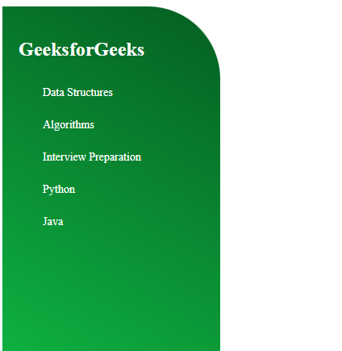
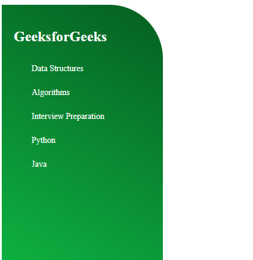

Semana 2
 Descripción
Descripción
Durante esta semana, nos enfocamos en el diseño de botones interactivos y animaciones utilizando HTML, CSS y Font Awesome, y en el desarrollo de una página web responsiva.
 Tópicos Aprendidos
Tópicos Aprendidos
Definiciones
Font Awesome es una valiosa biblioteca de iconos que simplifica la inclusión de iconos en aplicaciones web, aportando estilo y funcionalidad con facilidad. CSS, por otro lado, es el lenguaje que da vida a la presentación de documentos HTML, permitiendo que los elementos visuales cobren forma y coherencia.
Procedimientos
Creamos botones interactivos que capturan la atención y utilizamos CSS para implementar animaciones como loaders. Además, diseñamos una página web responsiva que se adapta armoniosamente a diferentes tamaños de pantalla, mejorando la accesibilidad y la experiencia del usuario.
 Resultados
Resultados
El diseño de botones y animaciones resultó en una experiencia de usuario más atractiva y fluida, mientras que la página web desarrollada se adaptó con elegancia a diversos dispositivos y resoluciones, ofreciendo una interfaz amigable y funcional.
 Reflexión Metacognitiva
Reflexión Metacognitiva
Reflexioné sobre la trascendencia del diseño visual y cómo incluso los detalles más pequeños, como los botones y las animaciones, juegan un papel crucial en la usabilidad y la estética de una página web. Este enfoque en los detalles no solo embellece el sitio, sino que también mejora la interacción del usuario y la efectividad de la comunicación visual.
 ¿Qué aprendí?
¿Qué aprendí?
Aprendí a diseñar botones interactivos y a incorporar animaciones, utilizando herramientas como CSS y Font Awesome, que transforman la experiencia de usuario de manera significativa.
 ¿Cómo aprendí?
¿Cómo aprendí?
Mi aprendizaje se desarrolló a través de la experimentación práctica y la aplicación directa de técnicas de diseño en proyectos web. Complementé esta experiencia con el estudio de ejemplos y tutoriales, lo que me permitió apreciar la combinación de teoría y práctica en el diseño web.